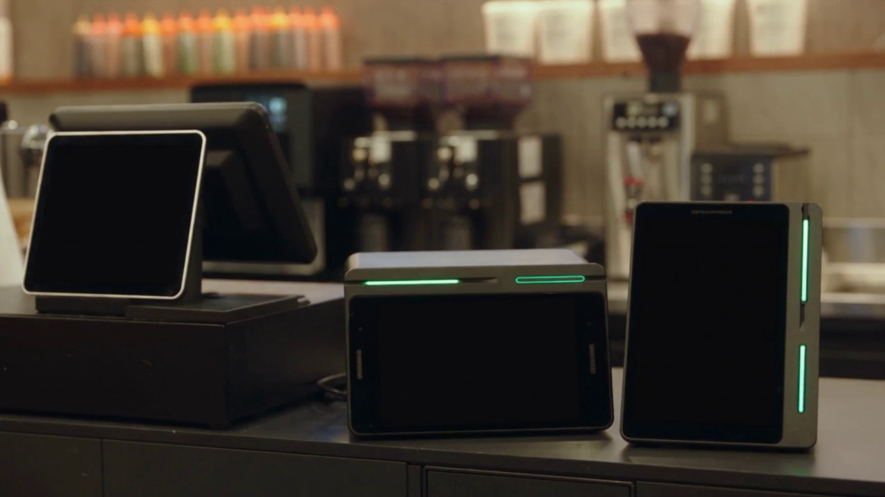

[제목]
포스가 갑자기 꺼졌을 때 확인하는 순서 — 매장 정전·포스 먹통 자가점검
[본문]
■ 먼저 결론부터
포스가 갑자기 꺼졌을 때, 기기를 계속 껐다 켜는 것은 순서가 아닙니다.
전원이 어디에서 끊겼는지부터 좁혀야 합니다.
현장에서 가장 많은 원인은 기기 고장이 아니라, 멀티탭과 어댑터 연결부입니다.
■ 1단계. 매장 전체인지, 그 자리만인지
가장 먼저 나눌 것은 이것 하나입니다.
· 매장 조명까지 꺼졌다 → 건물이나 차단기 문제입니다. 기기를 만질 단계가 아닙니다.
· 조명은 켜져 있는데 카운터만 꺼졌다 → 그 자리의 전원 경로를 봅니다.
이 한 번의 구분으로 찾을 범위가 절반 이하로 줄어듭니다.
■ 2단계. 그 자리만이라면, 바깥쪽부터
카운터 밑은 대개 선이 얽혀 있습니다. 순서를 정해 두면 헤매지 않습니다.
여기까지 봐도 안 들어오면 그때 연락하시면 됩니다.
■ 3단계. 화면은 켜졌는데 승인이 안 될 때
전원과 통신은 다른 문제입니다. 화면이 멀쩡해도 통신선이 빠지면 승인은 안 납니다.
· 유선이면 랜선 연결부를 봅니다.
· 무선이면 공유기가 살아 있는지, 재부팅이 필요한지 봅니다.
· 비 오는 날에는 인터넷 자체가 불안정한 경우도 있습니다.
전원부터 보고, 그다음 통신을 봅니다. 이 순서를 섞으면 시간이 배로 듭니다.
■ 4단계. 복구되면 반드시 확인할 것
불이 다시 들어왔다고 끝이 아닙니다.
· 그날 매출이 그대로 남아 있는지
· 꺼지기 직전 결제 건이 정상 승인되었는지
· 이중 승인된 건은 없는지
마감 정산 전에 확인하셔야 합니다. 다음 날 아침에 발견하면 처리가 번거로워집니다.
■ 평소에 해 두면 좋은 것
· 포스와 단말기는 다른 기기와 멀티탭을 나눠 씁니다. 전열기구와 같이 쓰면 부하가 걸립니다.
· 카운터 밑 선에 어느 기기 것인지 라벨을 붙여 둡니다. 급할 때 이것 하나가 큰 차이를 만듭니다.
· 정전이 잦은 자리라면 무정전 장치를 검토해 볼 수 있습니다.
■ 마무리
밤늦게 포스가 꺼지면 당황하게 됩니다. 그래도 순서는 같습니다.
전체인지 그 자리인지, 전원인지 통신인지 — 두 번만 나누면 대부분 그 자리에서 찾습니다.
누리네트웍스는 서울·경기·인천을 직영으로 설치하고 관리합니다.
직접 보셔도 안 되는 상황이면 편하게 연락 주십시오.
📞 전화상담 1544-7754
🌐 홈페이지 https://nwpos.co.kr
📷 인스타그램 https://instagram.com/nurinetworkspos
▶️ 유튜브 https://youtube.com/@nurinetworks
[SNS아이콘]
[SNS배너]
같은 이야기를 웹드라마 「단말기 기사단」 2화로 만들었습니다. 본문에 임베드해 주세요.
[대표이미지]
썸네일.png